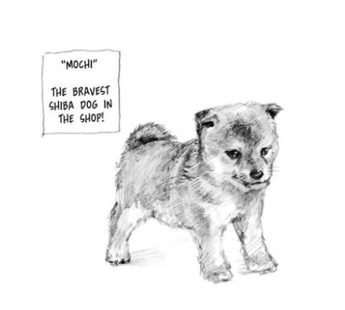
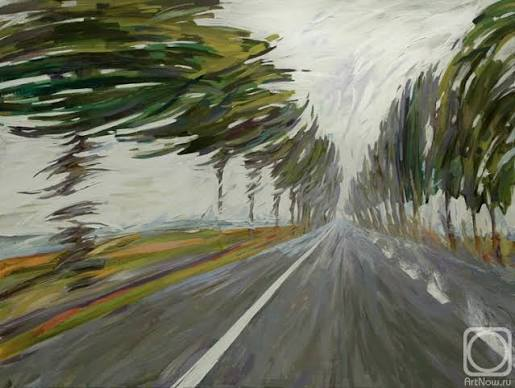

When the Past Still Feels Close
Holding on to memories that feel hard to let go.
Read More →on past relationships, regrets, and letting go

Not every ending is easy to accept. Some memories stay longer than we expect, and some lessons stay for life.
Read the Latest

Sometimes, memories return through a song, a familiar place, or a small detail we did not expect to remember. They remind us that certain moments mattered. Remembering does not always mean we want to go back. Sometimes, it simply means that the experience became part of our story.
It is easy to think about the words we could have said or the choices we might have made differently. Regret can teach us to understand ourselves better, but we should also learn to accept what we cannot change. We can learn from the past without rewriting it.
Moving forward does not mean pretending that nothing happened. It means accepting that some questions may remain unanswered and choosing to make room for new experiences. We can carry the lessons with us while allowing life to keep moving.